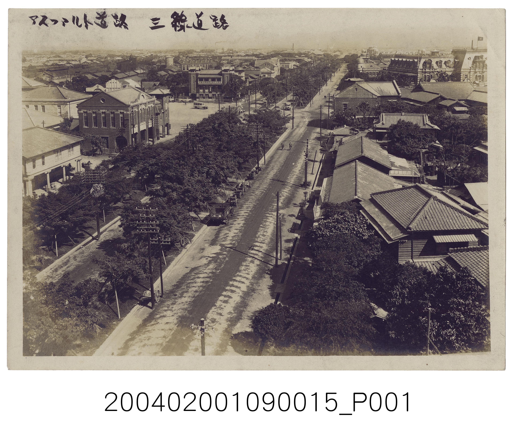

訪問、照片與資料比較
先看真的影像，再讀來源卡；訪問與文件可以補充，也會帶來新問題。
照片留下某個方向與時刻的畫面，但不會自動告訴我們所有原因。今天先讀一張真正的館藏照片，再用明確標示的模擬訪問與文件練習比較。
課綱主題採跨版本參考編排。教材為本站原創示例，依學生起點分次學習，不代表全國統一進度或特定教科書。
準備好了嗎？
這一課，我會練習
- 我能分開照片可見特徵與來源資料提供的說明。
- 我會比較影像、訪問和文件的範圍與限制。
- 我能修正過度推論，不把缺少畫面當成一定不存在。
陪學大人：準備材料
- 本頁完整虛構情境、圖表與任務卡
- 空白紙、鉛筆或大字卡；成人可代讀、代筆
用手邊安全的材料就好。孩子可以用說、指、畫或操作表示理解，不必先會讀完所有文字。
先看這張真的館藏照片
只說能指出位置的東西，不先補故事。

先找道路延伸的方向、路旁成排的樹與兩側房舍，再指一處電線桿或遠方的人車。照片畫面有限，沒有顯示整座城市、所有街道或一整天的變化。不要猜人物姓名、年齡、心情或職業，也不能因遠方細節不清楚就說那裡沒有人。
這張照片不是編者畫的示意圖。下方保留館藏影像編號，幫助核對來源；上方手寫字也屬原物件影像，我們不要求兒童讀出未教過的日文，更不以猜讀字音作評量。
再讀館方資料卡
圖片觀察與館方說明，來源不同要標清楚。
| 欄位 | 館方資料 | 閱讀提醒 |
|---|---|---|
| 名稱與登錄號 | 三線道路；2004.020.0109.0015 | 登錄號是識別藏品，不是拍攝年份 |
| 推測年份 | 1909–1945 | 是一段推測範圍，不是確定1909年拍 |
| 創作者 | 不詳 | 不能因猜到年代就補出攝影者 |
| 地點說明 | 館方描述為臺北北三線路，今忠孝西路，往東拍攝 | 地點與拍攝方向取自編目資料，不只靠樹影猜 |
| 道路用途說明 | 館方說兩排行道樹分隔道路，中間車馬道、兩側步道 | 不能把名稱改讀成現代三條汽車車道 |
照片能讓我們觀察當時留下的影像，編目資料補名稱、時間範圍與解釋。兩者一起用更清楚，但不要把「館方推測」寫成自己目睹了確切年月日。
示範：檢查一個太大的說法
看見幾輛車，不等於知道每個人怎樣出門。
虛構讀者小岑說：「這張畫面車不多，所以全城每天都不塞車。」可修成：「這個畫面只有少量可辨的人車；全城或其他時段情況未知。」這不是否定照片，而是避免它回答超出拍攝範圍的問題。
一起做雙色以外的來源標記
用文字標籤，讓不分顏色的人也看得懂。
| 句子 | 應標哪一類 | 理由 |
|---|---|---|
| 路旁有成排樹木 | 影像觀察 | 可指到畫面中的樹列 |
| 館方推測1909–1945 | 來源資料 | 時間區間來自館藏欄位 |
| 這裡每個居民都擁有汽車 | 尚無證據 | 照片未交代所有人的財產 |
| 攝影者不詳 | 來源資料的未知 | 資料明確保留未知 |
- 用「看見」「資料說」「待查」三張字卡分類。
- 選一句過度說法，改成只包含有依據部分。
- 提出一個需要其他照片、文件或訪問才能回答的問題。
不需要找家中照片或問長輩私事才能完成。
模擬案例：照片描述與訪問不一樣
以下市場資料全部是虛構，與上面臺北照片無關。
| 來源 | 完整內容 | 資料範圍 |
|---|---|---|
| 甲：1990照片描述卡 | 只拍市場左側，可見店一與店二；右側未入鏡 | 不能判定右側有什麼 |
| 乙：2015照片描述卡 | 畫面含左右兩側，可見店一、店二、店三 | 較寬畫面，不直接表示新增店面 |
| 丙：2024模擬訪問 | 居民說：「我2000年來時，店三已在。」 | 回憶提供時間線索，仍需核對 |
| 丁：1988模擬維修簿 | 記「本市場店三門窗修繕」；本例確認與乙為同一店址 | 更早文件已記店三，但未記初建年 |
甲沒拍到店三，不代表1990沒有店三。丁的1988紀錄更早，也與丙「2000已在」相容；不能只用兩個不同取景範圍就說店三於1990後新建。
獨立轉用：長椅是否新出現
先看取景範圍，再看新證據。
| 資料 | 完整內容 |
|---|---|
| 2010照片描述卡 | 僅拍廣場西角，未拍到東側 |
| 2018照片描述卡 | 拍到廣場東側兩張長椅 |
| 2014設置記錄卡 | 記廣場東側新增兩張長椅 |
| 2022模擬訪問卡 | 受訪者說喜歡在東側休息，沒說設置年 |
請寫：哪張資料最直接支持本例長椅設置年？2010西角沒拍到長椅能證明整個廣場沒有椅子嗎？訪問能補什麼，不能補什麼？先獨立回答，不把市場店三年份搬來。
核對與完成三源比較
最可靠的報告也會寫尚不知道。
2014設置記錄直接支持本例東側新增兩張長椅；2010僅拍西角，不能證明全廣場沒有其他椅子。訪問補一位使用者的感受，未提供設置年，也不能代表所有人的喜好。照片、文件與訪問各有可用範圍，應一起比較。
離堂選真實照片或模擬案例，交出一個觀察、一項來源資訊與一個限制，並標明真實或虛構。真實素材分享前需查授權；本課館藏影像已有PDM來源，私人照片則不能因此視為也可公開。全程不要求兒童姓名、家址、照片或錄音。
換我試試看
不急著猜答案。可以請大人念題目，先說出你的想法，再選一個最合適的答案。
已嘗試 0／8 題。做錯也能再試。
我的小小收穫
做到一項，就勾一項。還沒做到也沒關係，選一項下次再練。
目前勾選 0 項。
勾選和作答只留在這次開啟的頁面，不會傳送、儲存姓名或學習紀錄；重新整理就會清空。
給陪學大人的教學指南
先看孩子的起點，再決定今天走到哪裡。以下是可調整的原創教學示例。
展開完整教案、引導語與觀察重點
本課定位與教學焦點
真實NMTH道路照片為唯一實拍刺激，3840×3274原檔完整保留，PDM與來源由作者及獨立審查確認，協調者整合本機資產。觀察僅樹列/道路/房舍/遠處人車；地點、用途與推測1909–1945來自館方資料，不作現代三車道解讀，不推人物身分。市場與長椅後段明示虛構照片描述卡，題目問來源內容與範圍，不假裝另有實拍照片。1988店三紀錄不等於初建年；2014新增兩椅不能推出2010全場無椅。
安排與實作證據
建議分三回合。先共同閱讀本頁完整資料，請孩子指出一項確定訊息；再比較示範與另一種做法，要求回到資料說理由；最後遮住參考，以新情境獨立完成。保留初稿、一次修正與轉用作品，分別記錄孩子能否讀出線索、分開已知與推測、選擇有理由的做法及說明限制。選擇題用於診斷，答對不等於能獨立實作；成人追問「你用的是哪一格或哪一句？」而非只問是否記得標準句。
分層與可近用方式
起步者一次處理兩張大字卡，成人代讀後讓孩子指選並說理由；一般組完成比較和修訂；進階組增加一個條件，檢查原結論還適不適用。可用口述、畫圖、排列紙卡、坐姿操作或既有輔助溝通工具，不以眼神、音量、口音、書寫速度或公開發言作為能力指標。成人可代筆，但記錄由誰做判斷；提供安靜等待和暫停選項，協助前先詢問意願。
安全、隱私與課程界線
全課可在桌面用虛構材料完成。不要要求兒童揭露真實家庭結構、衝突、經濟狀況、姓名、地址、就學位置或診斷，也不收集照片、錄音及上傳作品。孩子可以不公開分享個人經驗；出現求助訊息時，成人應私下傾聽並依現行校園保護程序處理，不能請全班追問。課程參照三、四年級共同的第二學習階段，學期順序與資料均為編輯原創，不冒充特定學校的制度或全國一致教材。
資料來源與課綱對照
以下官方資料用於確認課綱方向或示範用語；本站的故事、活動與題目為原創。來源不代表核定本課的學期順序。
- 教育部／國家教育研究院｜社會領域課程綱要（另開視窗）
2026-10-05直接開啟官方172頁文件，核對第二學習階段（三、四年級）的角色、尊重差異、探究、資料整理及參與方向。此目錄的三年級上下學期次序為編輯安排，並非全國固定單元；人物、數據、情境圖與活動皆為原創教學資料。
- 國立臺灣歷史博物館｜三線道路，登錄號2004.020.0109.0015（另開視窗）
2026-10-05直接核對館藏資料、此件圖片PDM公眾領域標章與自由使用聲明；下載官方提供3840×3274圖片並目視核對。原檔完整保留，不裁切、補色或重繪。館方推測年份1909–1945，創作者不詳；本課分開影像可見特徵與館方詮釋，不把推測區間改為確切拍攝年。
- 國立臺灣歷史博物館｜看見歷史：館藏文物選要特展（另開視窗）
2026-10-05直接開啟官方展覽回顧，核對文書、地圖、照片與常民物件作為不同歷史材料的範圍。後半市場與長椅資料為原創模擬，不是館藏來源的摘錄，也不對應真實歷史地點。
來源核對範圍請見各項說明。外部影音請由大人協助開啟，不會自動播放。